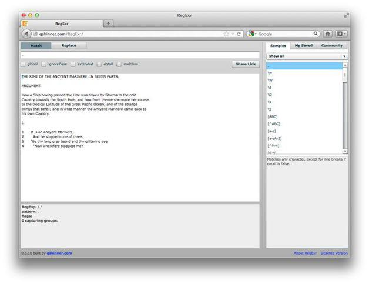

2.6 再谈匹配任意字符
用正则表达式匹配任意字符的一种方法就是使用点号（U+002E）。点号可以匹配除行结束符之外的所有字符，个别情况除外。
在RegExr中，去掉对global复选框的勾选。这样，任何正则表达式都会匹配目标文本中第一个匹配项。
在RegExr上方的文本框中键入单个点号来匹配任意字符。
如图2-6所示，点号匹配了目标文本中的第一个字符T。
图2-6 在RegExr中用.匹配单个字符
要匹配THE RIME整个短语，则可使用八个点号：
........
但这种方法太麻烦，所以推荐用量词：
.{8}
这个表达式就能匹配前两个单词以及它们之间的空格，但只是粗略地匹配。勾选global旁的复选框，看看这个表达式还有什么作用，你就知道我所说的粗略是什么意思了。它匹配了连续多组的八个字符，头尾相连，只有目标文本的最后几个字符除外。
下面我们再试试匹配单词的边界和字母的开始和结束位置。在RegExr上方文本框中键入以下内容，可以看到细微的差异：
\bA.{5}T\b
这个表达式有更强的特指性（请记住特指性，specificity，这个概念很重要），它匹配单词ANCYENT，也就是ancient的老写形式。这是如何做到的呢？
这个正则表达式实际上可以匹配ANCYENT和ANCIENT。
现在再试一下这个简写式：
\b\w{7}\b
最后再试试匹配零个或多个字符：
.*
它就相当于：
[^\n]
或
[^\n\r]
类似地，点号也可以与表示“一个或多个”的量词（+）连用：
.+
请在RegExr中尝试这些表达式，它们都会匹配第一行内容（在取消勾选global复选框的情况下）。原因是点号通常不会匹配折行符，例如换行符（U+000A）或回车符（U+000D）。勾选dotall旁边的复选框，然后.*和.+就会匹配下方文本框中的全部文本。（dotall表示点号匹配包括换行符在内的所有字符。）
这就涉及量词的贪心特性了。所谓“贪心”（greedy），指量词会匹配所有能匹配的字符。别急，第7章会详细介绍量词及其贪心特性。